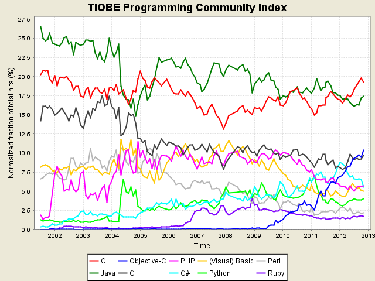

为什么使用JAVA？
广泛使用在各种业务场景和学术研究上

Just In Time Compiler (JIT)
Lock eliding
锁消除
Method inline
内联
Dead code elimination
死代码消除
Loop unrolling
循环展开
Lock coarsening
锁粗化
Escape analysis
逃逸分析
Duplicate code elimination
重复代码消除
高效的垃圾收集
· 大量的类库
· 无数的文档
· 优秀的开发工具
……
代码规则
命名规则
| 类型 |
规则 |
例子 |
| packages |
小写单词组成,不可使用拼音. |
com.apple.quicktime.v2 |
| classes |
大写字母开头,并能清晰表达其含义.建议模型类使用名词. |
class Book |
| interface |
与classes一致. |
interface Exchangedata |
| method |
大小写混合,第一个词使用小写,之后每个词首字母大写.建议使用动词. |
getBackground() |
| variable |
变量名大小写混合,第一个词使用小写,之后每个词首字母大写.建议使用动词.常用的变量可以按习惯使用,如循环变量. |
int chargeRate; |
| constant |
常量尽量使用单词的全称进行表达,并全部使用大写,词之间使用下划线进行分割. |
static final int MIN_WIDTH = 4; |
数据库操作
声明式事务
线程安全吗？
线程安全小结
· volatile
可以保证对一个变量读写的可见性、有序性。
· synchronized
可以保证同步段的原子性、可见性、有序性。
复合操作只能使用synchronized
Find Bugs
· 基于字节码扫描，有效发现各种bug
· 尽量集成到你的编译过程
· 不要轻易忽略Find Bugs发现的错误
总结
· JAVA的语言优势
Just In Time Compiler (JIT)
Grabage Collector
· 代码规范
· 编程惯例
数据库操作、异常、日志
Spring 声明式事务
线程安全